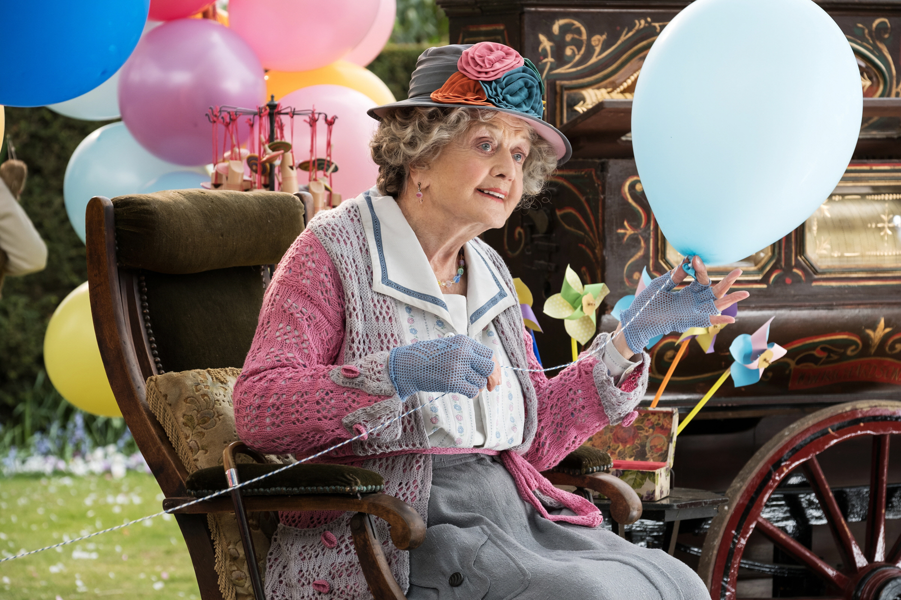
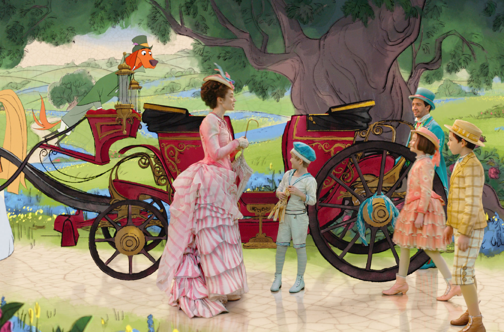
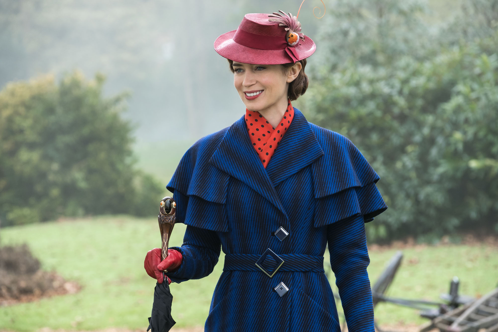
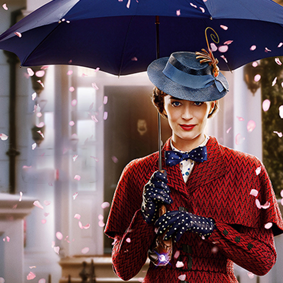
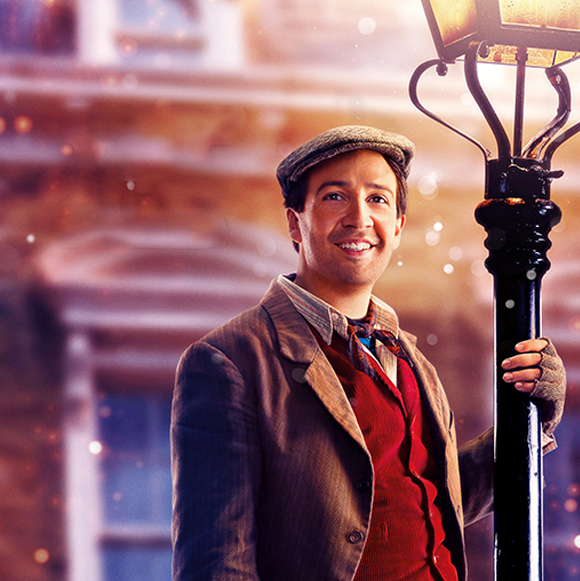
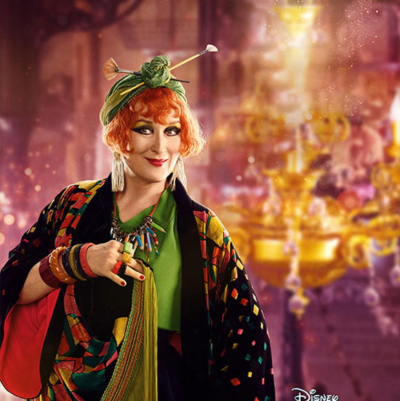
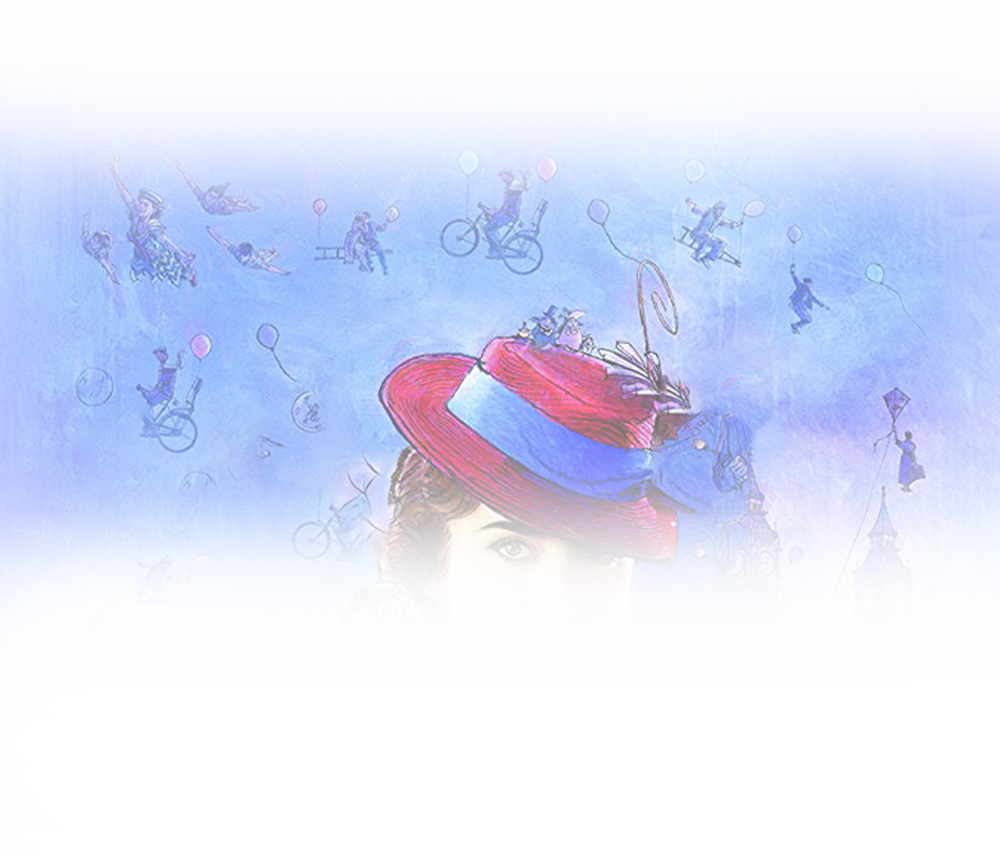
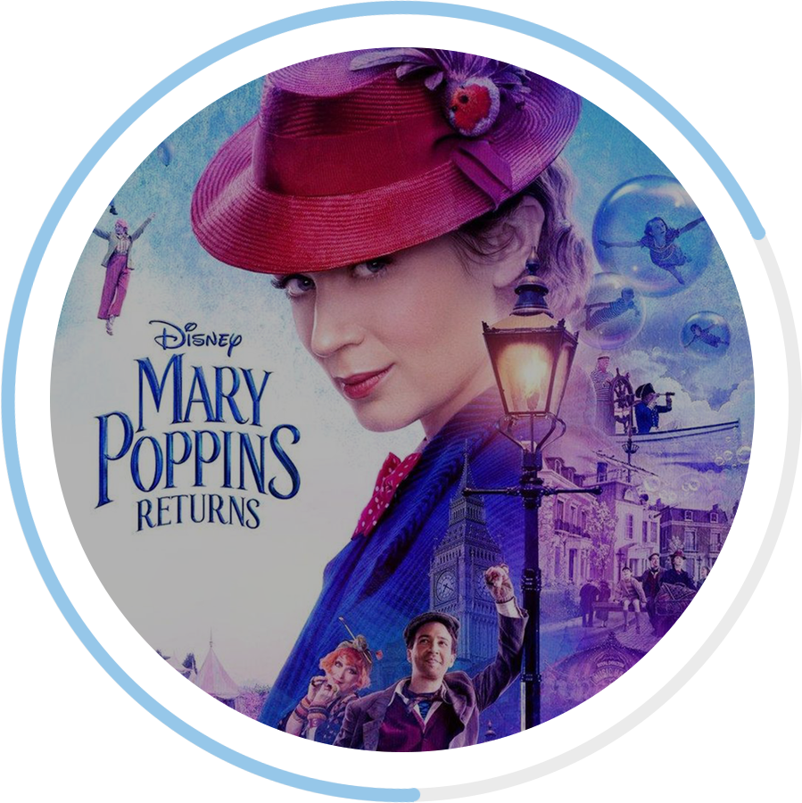

Ending
It's the ending scene of the movie. There's an old lady
selling balloons. Tell people to pick the right balloon for
themselves, and the right ones fly in the sky. This leads
adults to believe in magic, too.




Mary Poppins
Emily Blunt
A fictional character and the eponymous protagonist of
P.L. Travers's Mary Poppins books and all of their
adaptations. A magical English nanny, she blows in on
the east wind and arrives at the Banks home at Number
17 Cherry Tree Lane, London, where she is given charge
of the Banks children and teaches them valuable lessons
with a magical touch.
P.L. Travers's Mary Poppins books and all of their
adaptations. A magical English nanny, she blows in on
the east wind and arrives at the Banks home at Number
17 Cherry Tree Lane, London, where she is given charge
of the Banks children and teaches them valuable lessons
with a magical touch.

Jack
Lin Manuel Miranda
A cockney lamplighter and former apprentice of Bert
from the original film. He admires Mary Poppins
because ha has memories with her as a child. He lives in
the same neighborhood as Bank's familu, and helps
solve cases. He likes to sing, and he has a lively
presonality.
from the original film. He admires Mary Poppins
because ha has memories with her as a child. He lives in
the same neighborhood as Bank's familu, and helps
solve cases. He likes to sing, and he has a lively
presonality.

Topsy
Meryl Streep
She is a cousin of Mary Poppins. She lives in a house
with a very small door, fixing watches. Every
Wednesday her world turns upside down. She hated it
very much, but she thinks she can see the world from a
different perspective after being taught by 'Mary
Poppins'. She then became to love on Wednesday.
with a very small door, fixing watches. Every
Wednesday her world turns upside down. She hated it
very much, but she thinks she can see the world from a
different perspective after being taught by 'Mary
Poppins'. She then became to love on Wednesday.
.png)
William
Weatherall Wilkins
Weatherall Wilkins
Colin Firth
He's the head of a bank used by the Banks family. He is
the nephew of a bank president who is close to the
Banks family. But he is greedy and hates being robbed
of his own. So he lies to the Banks family and puts them
in crisis. He regards appointments as very important.
the nephew of a bank president who is close to the
Banks family. But he is greedy and hates being robbed
of his own. So he lies to the Banks family and puts them
in crisis. He regards appointments as very important.

